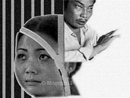

Tiền Phong - Lúc ra đi, tôi thấy chua chát. Trương biết là lần này thì anh không giữ được tôi nữa. Khi tôi đi, anh nằm quay mặt vào tường, nạng chống hờ bên thành tủ lăn xuống, cốc nước đổ, anh không buồn nhấc lên.

Tôi tự nguyện quay lại sống bên Trương Văn Huy, chăm sóc khi anh ta bị bó bột, dọn dẹp lại cửa tiệm. Một tay tôi lại cáng đáng hết. Khách đến thưa dần, cửa tiệm kinh doanh khó khăn, chúng tôi quyết định sang nhượng lại cửa tiệm để chuyển tới một phố xa trung tâm hơn.
Cửa hàng mới mở vẫn để tủ trầu cau, nhưng bán hàng giữa phố thì làm sao nhiều khách? Lái xe tải đường dài chỉ ghé quán gần đường lên cao tốc. Khách trong phố thì thích ra ngoại thành hơn, gái bán trầu cau ở ngoại thành cả gan hơn, ăn mặc mát mẻ hơn, trẻ hơn.
Trương khỏe lên tức là thời gian cãi cọ giữa chúng tôi nhiều lên. Vào ngày anh tập tễnh đi lại được, anh vớ gạt tàn thuốc đập vào đầu tôi, tôi ngất xỉu, máu giàn mặt.
Đầu tôi không vỡ mà chiếc gạt tàn thuốc lá bằng thủy tinh vỡ tan tành. Đây là giọt nước cuối cùng làm tràn ly.
Tôi trả tiền, toàn bộ tiền trong tài khoản của tôi cho anh, nói, em đến đây là vì đi xin việc, bây giờ em đi, em chỉ lấy đủ số tiền lương em đã làm công cho anh thời gian qua.
Ngày xưa, không bao giờ tôi nghĩ, tôi trả một món tiền tỷ mà điềm nhiên nhẹ nhõm thế.
Tôi bảo, anh hãy kiếm một cô gái khác thay em. Tôi ra đi, trong túi chỉ còn vỏn vẹn hơn năm vạn Đài tệ. Số tiền đó chỉ tương đương khoảng một ngàn bảy trăm đô la.
Sau hai năm ở Đài Loan, tôi quay trở lại xuất phát điểm ban đầu, thế này thì đến bao giờ tôi mới có thể có đủ tiền nuôi con được nữa?
Lúc ra đi, tôi thấy chua chát. Trương biết là lần này thì anh không giữ được tôi nữa. Khi tôi đi, anh nằm quay mặt vào tường, nạng chống hờ bên thành tủ lăn xuống, cốc nước đổ, anh không buồn nhấc lên.
Không biết anh ta nằm thế đến bao giờ. Tôi có đánh anh ta cái nào đâu mà sao anh ta lại có vẻ còn đau hơn tôi?
Tay trắng, xách túi quần áo, tôi đi khỏi thành phố nhỏ nơi tôi đã sống nửa năm qua. Tôi kêu taxi qua quảng trường thành phố, ngồi nhìn mọi người đi qua đi lại trong buổi chiều mùa hè. Tôi nhìn họ ngạc nhiên, mãi sau mới nhận ra rằng hôm nay là chủ nhật, họ được nghỉ làm và được ra ngoài chơi.
Thì ra, tôi đã không để ý thời gian. Thế giới của tôi chỉ có ngày và đêm. Ngày kiếm tiền, đêm nằm mơ lộn xộn mệt mỏi. Vòng quay ấy không có ngày nghỉ.
Tôi vào cửa hàng tạp hóa, lần đầu tiên tìm kiếm một thứ gì đó, một tấm bản đồ. Tôi cần bản đồ chỉ dẫn tôi sẽ đi đâu tiếp. Tôi trải tấm bản đồ lên ghế đá công viên. Gió thổi qua chỗ tôi cũng cô đơn như mùi cà phê đâu đây. Ôi, tôi cần một tách cà phê làm bạn lúc này. Tôi đứng lên, tới tiệm sách gần đó.
Ngồi uống cà phê trong tiệm sách, đã bao lâu rồi tôi mới có được một ly cà phê thong dong nhàn hạ như thế này?
Đời tôi đã thay đổi mà sao cà phê không hiểu?
Tách cà phê hết một trăm tám mươi tệ. Tôi nhẩm đếm số tiền còn trong túi. Với đà ăn tiêu này, tiền thuê nhà nữa, thì một tháng ít ra tôi cũng phải tiêu hết hai vạn Đài tệ. Nếu cứ thất nghiệp thì tôi chỉ còn đủ sống hai tháng nữa mà thôi.
Lúc đó, số tiền ấy thừa đủ cho tôi mua vé về Việt Nam. Nhưng không hiểu sao tôi lại không hề muốn về Việt Nam nữa, tôi như mũi tên đã bắn khỏi cây cung, chỉ còn biết cắm đầu lao về phía trước.
Tôi quên bẵng đi mất rằng, ngay trong túi tôi vẫn còn một chiếc vé khứ hồi, còn một chuyến bay về Sài Gòn nữa. Đó là cửa cuối của canh bạc cuộc đời, mà tôi, rất lâu sau này, tự dưng nhớ ra, lòng quặn thắt đớn đau.
Đêm ấy, tôi ngủ trên chuyến xe xuống Cao Hùng. Xe đỗ ở khu ga trung tâm Cao Hùng vào lúc bốn giờ sáng. Tôi xách túi ngơ ngác trên đường Kiến Quốc. Tôi ôm túi đi dọc phố, cho đến lúc thấy cổng ga và những cửa hàng ăn buổi sáng bắt đầu mở cửa.
Tôi được người quen giới thiệu tới một quán Việt Nam trên xa lộ liên tỉnh gần sân bay Tiểu Cảng. Các chị em ở đây rất nhiệt tình, mọi người cởi mở và thân thiết như đã quen biết từ lâu. Tôi như chết đuối vớ được phao cứu sinh.
Tôi lại đi bán trầu cau, tôi bán cho một tiệm sát xa lộ, xe cộ rất đông vì là tuyến đường chính ra sân bay. Tôi nhuộm tóc, mặc đồ rất ngắn và đi giày rất cao. Nhưng bù lại, lương cũng khá hơn khi tôi ở Đài Trung.
Một ngày, một người đàn ông chạy xe tới cạnh tiệm trầu của tôi thì xe hỏng. Ông đành vào ngồi chờ hãng xe qua lấy xe về sửa. Ông không ăn trầu, ông cũng không mua gì cả, tôi để ông ngồi ở cửa, chuyện trò đôi câu.
Sau này, ông thỉnh thoảng chạy xe qua đường này vẫn dừng lại vào chào hỏi tôi, nhưng ông cũng không mua gì ngoài vài điếu thuốc, một ít giấy ăn. Tôi nghĩ đây cũng chỉ là một trong những người đàn ông có thiện cảm với mình, nhưng nếu mình không cẩn thận, để họ can dự quá sâu vào đời mình, cái thiện cảm đó sẽ lại mang cho mình tai họa.
"Có thể sau này tôi sẽ phải trả giá, sẽ có lúc chính mình khinh rẻ mình, mình tự giày vò mình. Nhưng bây giờ, tôi chỉ thấy mơ ước có được ngôi nhà riêng đã trở thành sự thật, ngày tôi đón con sang đây đã tới gần"
Mọi việc ổn, cho tới khi mẹ tôi ở Việt Nam nằm viện, con trai tôi cũng nằm viện. Mẹ tôi huyết áp cao, lại tiểu đường nữa, ba tôi cho cháu ăn thế nào mà con trai tôi bị ỉa chảy kéo dài, bị mất nước và phải đưa đi cấp cứu ngay trong đêm.
Tôi cuống cuồng ra quán Việt Nam, gửi ngay một nghìn đô về cho ba tôi. Hai hôm sau, ba tôi gọi điện nói, tình trạng mẹ tôi đã đỡ rồi, mẹ tôi đã đỡ, nhưng con tôi thì chưa ra viện. Và số tiền ấy không đủ.
Tôi hiểu chắc chắn tình hình nghiêm trọng hơn thế nhiều, bởi nếu chỉ đơn thuần là tiền viện phí thì ba mẹ tôi vốn đã có một số tiền dành dụm từ lâu nay. Và tôi cũng thỉnh thoảng gửi về cho mẹ, dặn là tiền dành nuôi con tôi. Hẳn bệnh tình mẹ tôi nặng hơn nhiều, và con tôi hẳn không chỉ tiếp nước là đủ. Nhưng biết làm sao, hỏi thì ba tôi cũng chẳng nói gì hơn.
Tôi đi vay thêm hai nghìn đô nữa gửi về. Đây là số tiền đầu tiên tôi phải đi vay.
Tôi xin thêm việc phục vụ quán ăn đêm để có thêm thu nhập. Và thế là ban ngày tôi bán trầu cau tới bốn giờ chiều. Ban đêm tôi lại đi rửa bát thuê từ tám giờ tối tới bốn giờ sáng. Tôi kiệt sức trong công việc, nhẩm tính khoảng bốn tháng nữa tôi sẽ trả hết nợ, cả vốn lẫn lãi.
Một ngày, một người phụ nữ lái xe hơi qua tiệm tôi mua trầu cau. Chị ngắm tôi rồi nói, ngực đẹp lắm. Chị mua hai trăm tệ và bảo, có muốn đi làm ở quán Karaoke của chị không, lương cao hơn bán trầu cau nhiều. Nghe đến quán Karaoke là tôi từ chối liền. Chị không hỏi gì thêm, đi luôn.
Chị Việt Nam lại đến mua trầu, thực ra hình như để hỏi thăm tôi. Bởi thấy chị nấn ná đứng lại hỏi han thêm vài câu, và có bao giờ phụ nữ đi mua trầu, trừ khi họ ngồi sẵn trong xe một người đàn ông?
Chị không hỏi tôi có đồng ý đi làm chỗ chị hay không, chị chỉ bảo, chỗ chị nhiều cô trẻ giống tôi lắm, nên trông thấy cô dâu Việt Nam vất vả, chị rất thương. Vì chị đã từng phải đi bán trầu thế này rồi, chị biết, người Việt Nam thà cởi hết đồ trong quán mát-xa còn hơn mặc đồ lót hay quần áo khêu gợi ngồi trong chiếc hộp kính bán trầu thế này. Đơn giản là vì chữ thể diện của người Việt Nam quá lớn.
Tôi lại nhớ đến những cô dâu Việt Nam đi đổ rác sau xe rác khu Quế Viên năm ngoái. Họ ít trò chuyện với nhau có lẽ chỉ bởi hai chữ thể diện ngăn họ ở lại trong cộng đồng nhỏ bé có cảnh ngộ giống mình.
Họ sợ bước ra, phải đối mặt với sự thật, với những tên gọi và khái niệm khác biệt. Ở trong cộng đồng của mình bao giờ cũng có cảm giác an toàn hơn.
Vài ngày sau, tôi bấm số của chị Linh, chị cô dâu Việt Nam đã lái ô tô qua quán trầu cau của tôi. Chị Linh hẹn sẽ đến đón tôi vào lúc sáu giờ chiều. Tôi cũng nghĩ, nếu như chị nói, thì tôi cứ làm thử một ngày. Chỉ một ngày thôi xem công việc ra sao rồi mới quyết định. Tôi xin hai ông chủ cho tôi nghỉ làm hai ngày không lương, rồi ăn mặc tươm tất chờ chị Linh ở cổng nhà trọ.
Xe đi không lâu, chừng nửa tiếng, để từ khu tôi sang một chung cư cũ gần ga Cao Hùng, chính là nơi tôi đã xuống chuyến xe đường dài, ngơ ngác lúc bốn giờ sáng hôm nào.
Buổi chiều, người qua lại tấp nập. Quán Karaoke nằm trong phố ngách sau lưng chợ điện tử trung tâm Cao Hùng.
Thang máy đưa lên tầng năm, ở đây có năm phòng được chia nhỏ ngăn ra, sửa lại từ một căn hộ cũ của một gia đình sinh sống. Hình như tầng trên đầu chúng tôi còn một lữ quán rẻ tiền cho khách đi tàu thuê ở tạm một đêm, một quán mát xa chân bình dân của người Thái Lan.
Ngày đầu tiên đi làm, tôi được boa sáu nghìn tệ. Tôi tưởng như đang nằm mơ, một ngày bằng tiền ăn của tôi cả tháng. Tiền nhiều và dễ kiếm đến mức tôi choáng váng. Chỉ hát hò, uống bia, chơi xúc xắc với mấy quân bài và để họ ôm vào lòng, gọi là bạn gái. Tôi không quay lại chỗ cũ xin phép chủ, cũng không thèm quay lại lĩnh nốt phần lương thừa nữa. Tôi ở lại luôn từ hôm đó.
Có sáu cô dâu Việt Nam, thêm tôi là bảy. Bảy người ở chen với nhau trong một phòng ngách nhỏ hơn vốn là bếp của căn hộ được nới ra ban công. Phòng ngủ của chúng tôi chất bừa bãi quần áo và tách trà uống dở, thỉnh thoảng vẫn bị các chị "mượn tạm" để đón một "anh bạn" cũ nào đó. Tôi trẻ nhất và còn nhút nhát nhất.
Những ngày tháng bán trầu cau dù có làm tôi dạn dĩ, nhưng cũng khó có thể một sớm một chiều thoát xác từ một phụ nữ trong gia đình thành một cô gái phong sương giang hồ. Vả lại, tôi cũng chưa có "khách quen", vì thế tôi chưa từng bao giờ phải mượn tạm phòng khóa trái cửa để tâm sự chớp nhoáng với họ.
Tháng đầu tiên, tôi có trong tay hai trăm nghìn Đài tệ. Bằng một trăm triệu đồng Việt Nam, số tiền như trong mơ. Tôi đã từng nhẹ nhàng trả cho Trương Văn Huy tiền tỷ, nhưng tôi lại nâng niu từng đồng do tôi kiếm ra, nhất là khoản tiền lớn đầu tiên này. Nó không chỉ là sức lao động của tôi, nó còn là gánh nặng mà tôi phải mang cả đời.
Tôi chia tay chị Linh chuyển lên quán mát xa Thái Lan ở tầng trên. Lý do rất khó nói. Chị Linh vẫn gợi ý tìm cho tôi khách quen, nhưng tôi làm sao kiếm được "khách quen" khi tôi không chịu ra ngoài "đi chơi" với bất kỳ người đàn ông nào.
Chị Linh đón thêm một cô dâu trẻ về, mới hai mươi tuổi, chưa có con cái, trốn chồng đi làm. Cô ấy rất ngoan ngoãn, nghe lời chị, nên tôi xin ra ngoài, chỗ tôi ngủ, cô ấy dọn đồ vào ở.
Tôi quen một chị trên quán mát xa nên lên đó làm, chị hứa sẽ hướng dẫn tôi làm. Chị cũng nói chủ rất dễ chịu, chủ ở đây không khốn nạn như các quán khác. "Chứ em đi đâu cũng thế thôi, ngoài kia xã hội đen tàn nhẫn lắm. Em gặp chị Linh hay em lên quán mát xa cũng thế, đều là may mắn lắm đó!".
Tôi biết quá rõ về bóng đen ám ảnh của những thế lực phi pháp, nên tôi dễ dàng đồng ý. Tôi không thể quay trở lại rửa bát hàng đêm, rồi lại bán trầu suốt ngày, làm quần quật mà mỗi tháng chỉ để dành ra được hơn vạn tệ.
Tôi chưa từng nói cho ai biết, tôi đã từng là sinh viên tốt nghiệp đại học, tôi biết nói tiếng Anh, tiếng Pháp, tiếng Hoa, tôi con nhà khá giả tại Sài Gòn. Tôi chỉ bảo, em sang đây bị chồng bỏ rơi, chẳng nghề nghiệp gì, đành phải thế này!
Tôi thấy đời mình sao giống một tiếng thở dài, càng về sau càng trĩu nặng, sầu muộn.
Hình dung nơi đây như con thuyền nhỏ lênh đênh giữa sóng gió đã cứu vớt bao nhiêu người lên thuyền, nhưng cũng đã đẩy bao nhiêu người xuống biển.